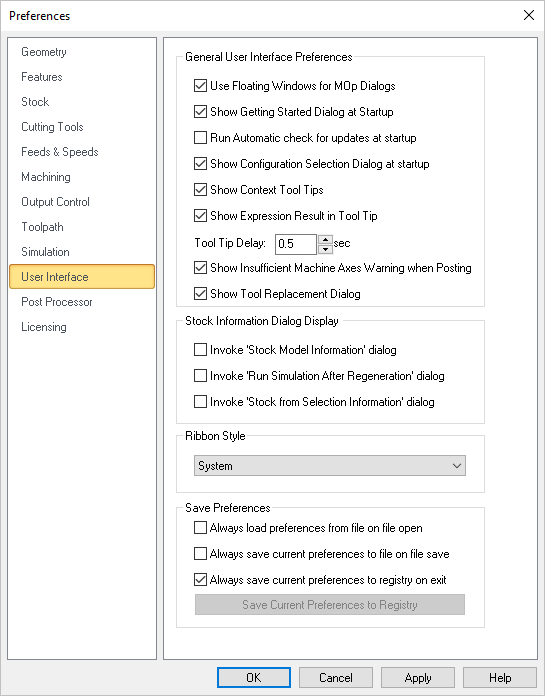
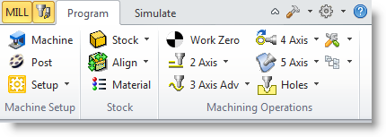

From here you can set the various user interface options.
 Dialog Box: CAM Preferences > User Interface |
User Floating Windows for Mop Dialogs Selecting this option displays machining operation dialogs as a floating window where the dialog appears on top of the Machining Browser. If the above option is unchecked the machining operation dialog is docked and is displayed over the Machining Browser window. Show Getting Started Guide at startup This displays Getting Started dialog at program startup every time the program is loaded. This dialog provides quick access to resources on MecSoft's website. Run Automatic check for updates at startup Selecting this option automatically checks for product updates when RhinoCAM is loaded. This requires access to internet on the computer running RhinoCAM. Show Configuration Selection Dialog at startup Selecting this option displays the product configuration dialog to run when the program is loaded. User can select from the following MILL modules - Standard, Expert, Professional and Premium.
Show context ToolTips
Show Expression Results in Tooltip
Show Insufficient Machine Axis Warning when Posting
Show Tool Replacement Dialog When you open a file that contains tool(s) whose names match a tool that is currently loaded, a dialog asks if you wish to replace the currently loaded tools with the tools from the file you are opening. You can check this box to replace tools by default and stop the dialog from displaying. |

Invoke 'Stock Model Information' dialog
Invoke 'Run Simulation After Regeneration' dialog
Invoke 'Stock from Selection Information' dialog
|
This allows the selection of different themes that changes how the Browser windows appear. The borders, colors, highlighting, and shadowing of standard buttons, dialogs, and windows are controlled by which theme is selected.  Example Ribbon Style: Office 2010 Silver |
Always load preferences from file when opening a new file Check this box if you wish to always load CAM Preferences from the file you are opening. Remember, however, that your current settings including your selected post is subject to be being changed. Always save current preferences to file on file save Check this box if you wish to always save the current CAM preferences to the file on file save. Remember, however, that your current settings including your currently selected post will replace those preferences that were in the current file originally. Always save current preferences to registry on exit Check this box if you wish to always save the current CAM preferences to the Windows registry when you exit your MecSoft CAM plugin. This will ensure that your current CAM settings will always be used when starting a new file. Save Current Preferences to Registry If you have your preferences set the way you want them and do not want them top change, select this button to save the current preferences to your Windows registry. Doing this will force them to be loaded when you create new files. |